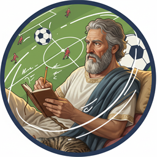

Clearer chart, familiar fonts, two layout directions to choose from, and the Monday review screen where nothing posts until you approve it. The recap counts every signal we sent. Cover numbers are samples until it reads the real week; the stories are real signals.
The cover counts every signal we sent, often 50+ a week, so a row per match won't fit. Instead it answers two plain questions: how long did the goal take after the signal, and how did each day go. Green is a goal, stripes are no goal, the same on every card.
Light and calm, like a club programme or The Athletic. Reads well on a phone and stands out against dark betting feeds.
1 / 3 · Cover

KalchasQuick goals in Central America and Armenia, then a bad night in the Dutch Cup.
2 / 3 · Three we got right
The side we flagged scored, soon after the signal.
3 / 3 · The one that got away
Our most confident call of the week. Kozakken Boys' recent form said two goals were coming. But that form was built in the third tier, and this was a cup tie against an Eredivisie side. They had 23% of the ball, and 11 of their 14 shots missed the target.
Lower-league form doesn't travel. Four Dutch Cup signals this week, no goals.
Dark, like the score graphics on a TV match. Bolder and more "sports", closer to what bettors already look at all day.
1 / 3 · Cover
Fastest goal came 1 minute after the signal. Average wait: 9 minutes.
2 / 3 · Three we got right
3 / 3 · The one that got away
Our most confident call of the week: +1.9 goals owed on form. But Kozakken Boys' form was built in the third tier, and this was a cup tie against an Eredivisie side. They had 23% of the ball, and 11 of their 14 shots missed the target.
Lower-league form doesn't travel. Four Dutch Cup signals this week, no goals.
A new tab in admin. The draft is ready Monday morning and the bot messages you on Telegram. You edit, approve, and it posts. If you don't approve, it doesn't go out.